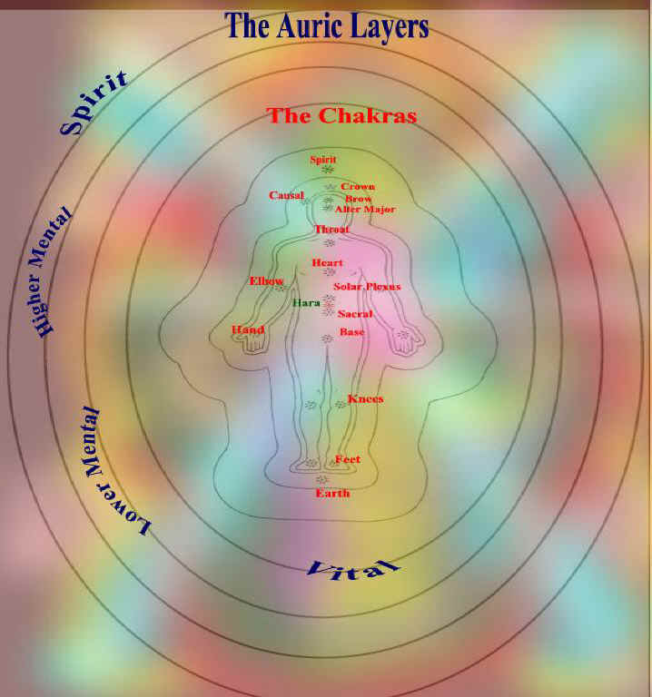

The chakra system and the auric layers are
the energetic system of a living being, everything we are on a physical,
emotional, mental and spiritual level is associated with the chakras and the
auric layers: and all the information that make up us is contained in this
system.
Chakra is an Indian word that means wheel. The
chakras are vortexes resembling spinning and vibrating wheels that turn upon
their axis all over the body, they are an integral part of the auric body:
chakras are not visible to normal sight, they absorb and distribute vibrant
energy to different parts of our physical body. There are eighty-eight
thousand chakras or energy centres in all.
SPIRIT CHAKRA:
Translucent Gold in colour. Complementing crystals are celestite and diamond.
It is located above the soul chakra, the distance varies from person to person
sometimes this chakra is located more that five feet away from the top of the
head. Its purpose is to maintain a link between the creator and creation. When
a person dies, this chakra expands fully to ensure his or her return to the
spirit world. When channelling Reiki into a dying person it allows the person
to reconnect with his or her spirit and his or her God, thus making departing
this life cycle less traumatic.
SOUL CHAKRA:
Translucent Pearl in colour. Complementing crystals are clear quartz or
amethyst. It is located approximately three inches above the middle of the
head. It provides a force of energy via the crown and brow chakras. This force
inspires you in your everyday activities and your purpose in this life.
CAUSAL CHAKRA:
(minor) Translucent Silver in colour. Complimenting crystal rose quartz. It is
located approximately seven to nine inches above and behind the head; it
facilitates communication between the physical and the spiritual realms. When
a spirit or guide seeks communication the causal chakra is activated.
CROWN CHAKRA
: The colour is
white, mauve or gold. Complementing crystal is clear quartz. The symbol is a
1,000 petal lotus. The maturity age of this chakra is 42-49 years. The
activation of this centre brings into balance ‘who you are’. It is located on
top of the head and radiates upwards. It governs the upper brain, right eye,
hypothalamus, and pineal gland. It is the zone of connection to the higher
self, inner guidance, consciousness of oneness, all embracing love, extended
consciousness, wisdom, intuition and spiritual awareness.
BROWN CHAKRA:
(third eye) The mantra is Om. The
colour is purple. Complementing crystals are amethyst or purple fluorite. The
symbol is a 2 petal lotus. The sensory function is all senses including
extrasensory perception. The maturity age of this chakra is 35-42 years. This
is the time of expansion, when one starts to look past the physical and ask
what else is there. When this centre is activated one’s view of life will
alter. It is located in the middle of the forehead and radiates forwards. It
governs the lower left brain, left eye, nose, spine, ears, pituitary glands
and face. It is the zone of the will, thought control, inner vision,
clairvoyance, inspiration and spiritual awakening.
The Alter Major : Brown in colour. Complementing crystals carnelian and tiger’s eye. It is located in the nose and radiates forwards. The element is wet earth. The sensory is smell. This chakra governs the sinuses, physical, emotional and mental balances and preservation of our life in terms of assuring that we live until our agreed time span has been reached. This chakra shares the sense of smell with the base chakra and the glandular connection is the same as the solar plexus. It is the zone of spiritual enlightenment through sound.
THROAT CHAKRA:
The mantra is Ham. The colour is blue. Complementing crystals are aquamarine
or jade. The symbol is a 16 petal lotus. The element is akasa. The
sensory function is hearing. The maturity age of this chakra is 28-35 years.
Once this centre is activated you are able to look at multiple perspectives.
It is located in the throat and radiates forwards. It governs the throat,
thyroid, 4 para-thyroids, bronchial, esophageus, vocal cords, nape of the
neck, upper lungs, arms, digestive tract, jaws and cheeks. It is the zone of
communication, openness, the ability to hear other people’s opinion and points
of view, creativity, self-expression, knowing how to listen to inner voice and
a sense of responsibility.
HEART CHAKRA:
The mantra is Yam. The colour is green. Complementing crystal
is rose quartz. The symbol is a 12 petal lotus. The element is air. The
sensory function is feeling. The maturity level for this chakra is 28-35
years. This is the centre where we discover our passion for life and others.
It is the pathway to your talents and potentials. It is located in the middle
of the chest and radiates forwards. It governs the heart, blood, circulation,
lower lungs, upper back, the thymus gland, skin and hands. It is the zone of
emotions, self love, love of others, sharing, sympathy, selflessness,
devotion, compassion, trust, forgiveness, spiritual development, peace and
healing.
Solar plexus:
The mantra is Ram.
The colour is yellow. Complementing crystal is citrine. Symbol is a 10 petal
lotus. The element is fire. Sensory function is sight. Maturity age of this
chakra is 14-21 years. This is where we get our gut feelings. It is located a
hand above the belly button radiates forwards. It governs the lower back,
stomach, digestive tract, spleen, liver, gall bladder, pancreas and solar
plexus. It is the zone of power, strength, fear, grief, jealousy, loss of
love, tolerance, wisdom, inner calm, intuition, peace, acceptance of others,
ego development (some books state that this chakra is related to the fight or
flight response).
HARA CHAKRA:
Apricot or silver in colour. Complementing crystals honey calacite and
sunstone. The element is granite. It is located in the auric field between the
solar plexus and sacral chakras away from the body, and it has a vortex like
form. The hara chakra governs and is the zone of vitality, strength, stamina
physical poise and balance. Many healers work from the hara chakra.
SACRAL CHAKRA:
The mantra is Vam. The colour is orange Complementing crystals are red jasper
or carnelian. The symbol is a 6 petal lotus. The element is water. The sensory
function is taste. The maturity age of this chakra is 7-14 years. It is
located at the coccyx in the lower abdomen and radiates forwards. The sacral
chakra is linked to the brow chakra and when it is in balance it assists
in the development of psychic skills. It governs all liquids such as blood,
lymphatic fluid and digestive secretions, reproductive organs, oestrogen,
testosterone, progesterone, urogenital system, gonads, ovaries and kidneys. It
is the zone of vitality, enjoyment, self- esteem, awe, desire, sensuality,
eroticism, enthusiasm and relationships.
BASE CHAKRA:
( or root) The mantra is Lam. The colour is red. Complementing
crystal is smoky quartz. The symbol is a four petal lotus. The element is
earth. Sensory function is smell. The maturity age of the base chakra is O-7
years and when we are feeling low it is the first centre to become depleted.
It is located at the base of the spine and radiates forwards. The vibrational
rate is the slowest of all the chakras and is the nearest vibration to solid
matter. It governs: cell multiplication, blood, intestines, adrenal glands,
prostrate glands, bladder, spine, bones, teeth, nails, genitals, anus and
legs. It is the zone of the life force, the will to live, connection to
nature, motivation and procreation. It is also the zone of fight or flight
response where the decision to stay and fight or run away manifests and
all non essential systems slow down or stop and the essential systems increase
activity. Many people have an imbalance in their base chakra because the fight
or flight response is not allowed to be acted upon. Fighting is socially
unacceptable and so is running away:
ELBOW CHAKRA:
Yellow gold in colour. Complimenting crystal rose quartz. This chakra
governs and is the zone of feelings toward home and family issues.
HAND CHAKRAS:
(minor) Lemon in colour. Complimenting crystals are rose quartz or green
fluorite. They are located in the palm of each hand, they govern
creative expression and learning, they are also the chakras that transfer the
Reiki energy that enters the practitioner via the crown into the client or
self in self-healing.
KNEE CHAKRAS:
(minor) Maroon in colour.
Complimenting crystals are garnet or tiger’s eye. It is located behind each
knee, this chakra governs our strength of purpose, our worthiness and the
shoulder and neck muscles; and monitors the flow of the body’s energies.
FOOT CHAKRAS:
(minor) Brown in colour. Complimenting crystal: clear quartz. Located on
top of each foot. This Chakra governs balance, wholeness and the logic mind;
it regulates the flow of the body’s energy from the physical layer of the body
to the spiritual layer.
EARTH CHAKRA: Dark Brown in colour. Complimenting crystals: rose quartz or emerald. It is located approximately eight inches beneath the feet. It governs bonding and produces a sense of connectedness and a sense of community.
THE AURA
Auras love to be touched, energised and massaged.
Even people who claim that they don’t like to be touched will happily let you
work in the aura. To a visual practitioner the aura might express its pleasure
in being handled by giving off a wonderful display of colour, images, or warm
sensations. To a sensitive client, he or she may feel his or her own aura
responding to the healing.
An aura massage does wonders for the whole
person. Massaging the aura should be done intuitively. Stimulate the hand
chakras, ask for guidance and raise your hands above the body. You may be
guided into circular or oval hand motions; drawing energy from one part of the
auric field and massaging it into another; you may need to stretch or pull the
aura, poke at it, pat it down; sign a symbol into it; stitch up black holes,
visualise colour into it, etc.
The physical layer:
is connected to the base chakra, it is about an inch away from the body, it is
often observed as a green, blue, silver grey or white light around the body.
This layer follows the contour of the body. This layer represents the health
state of a person, and when a person is sick then the physical layer may show
bulges, which extend into the other layer. Kirlian photography can record the
physical aura layer.
The
etheric layer: is connected to the sacral chakra, it is blue
grey colour and extends about four inches away from the physical layer, its
role is to record this life and carry off the soul at the point of death. The
etheric layer acts as a pattern or blue print for the physical body to grow
into. It is in the etheric layer that you glean past life memories from. In
near death experiences it is the etheric layer that separates from the body
and hovers around and watches on until the body is brought back to life. When
the body dies the etheric layer transports the soul to the spirit world. When
people see spirits or ghosts it is the etheric layer or the spiritual double
of the one who has died that they see. When a person has lost a limb it will
still exist in this auric layer that is why the individual often still feels
as if he still has the missing limb.
The vital layer:
is connected to the heart chakra and it contours the body. It is located about
a foot away from the etheric layer, this is the only layer that absorbs energy
and radiates it out, the other layers only absorbs energy. This layer connects
you with nature and it expands in a myriad of colours when you are well and
happy and contracts if you are unwell and sad.
The astral layer:
is connected to the solar plexus chakra, it extends well over two feet from
the vital layer and it is oval in shape, and varies in colours, it is in this
layer that the aura blends and shares its energy with those all around. The
astral layer is what pulls together like minds such as community groups,
church groups, sporting group’s even gangs. Past and present information is
stored in this layer, often recalling moments that seem déjà vu. This is
the layer where hypnotherapists try to access long forgotten or blocked
memories. The astral body is also the realm of infatuation, it’s at this level
that people fall in love.
The lower mental layer:
is connected to the throat chakra and is yellow in colour, oval in shape and
extends about eight inches away from the astral layer, at this level resides
our intellectual abilities and skills and our sense of reality
the
higher mental layer: is connected to the brow chakra, it expands
up to two feet away from the lower mental and is oval in shape. This layer
conveys formless information to the lower mental layer by way of thoughts,
sound, smell or symbols. The higher mental layer has direct access to the
universal consciousness’ wisdom and inspiration
The spiritual layer: is connected to the crown chakra, this layer is connected to God or the universal consciousness, and draws on all the universal energy required to live in the earthly life. The energy is drawn through the crown and processed to the thousands of chakras in our body. Through this layer we connect with our own spirituality.
Source: http://www.reikidantri.com/Chakra%20system%20and%20auric%20layers.htm